El proyecto
Tres estudiantes de secundaria de un colegio fiscal, un Arduino UNO y un puñado de piezas sueltas. Así nació Arturito: esta es la parte feliz de la historia.
La cinta negra se puede arrastrar: muévela para leer lo que hay debajo o dibuja figuras nuevas con ella.
El equipo
Tres cursos distintos y un solo carrito.
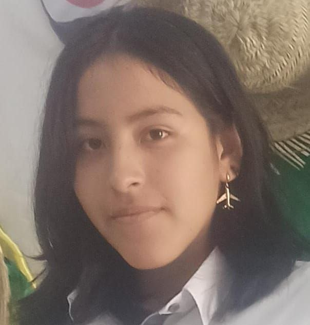
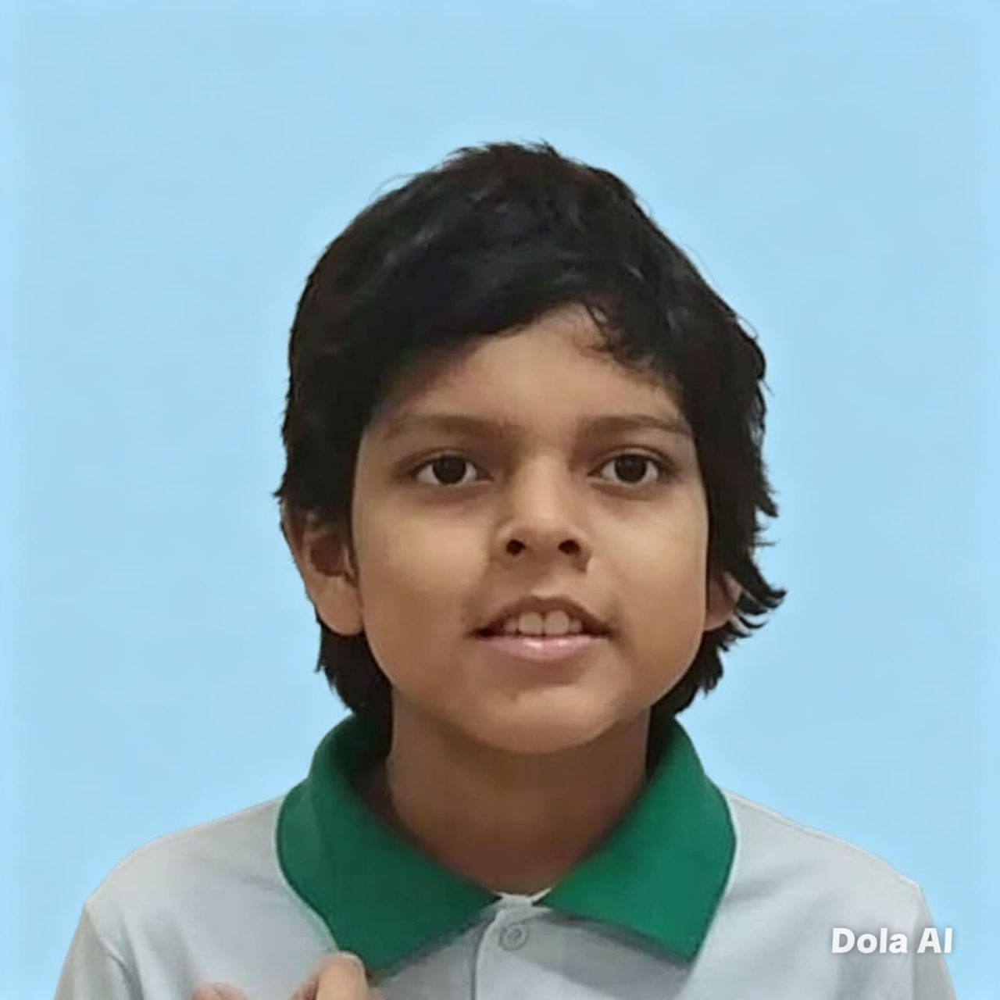
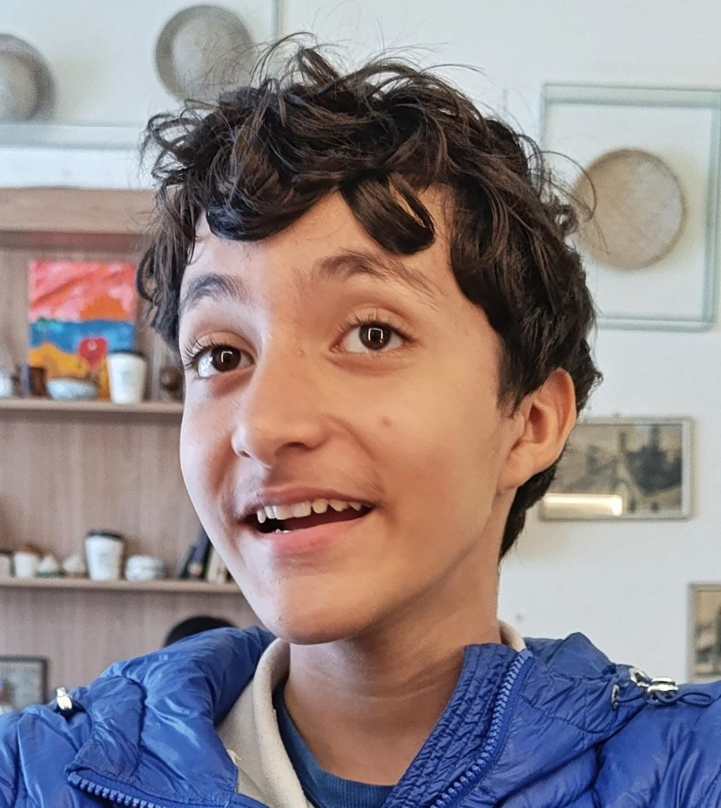
El robot
Arturito lee la línea con cinco sensores infrarrojos TCRT5000 en punta en la parte delantera. Un Arduino UNO decide hacia dónde girar y dos motores reductores amarillos lo empujan. Lo alimentan cuatro pilas AA y el interruptor de encendido se ve a simple vista, como pide el reglamento.
- Arduino UNO
- 5 sensores TCRT5000
- Driver dual de motores
- 2 motoreductores 1:48
- 4 pilas AA
- Menos de 25 × 30 cm
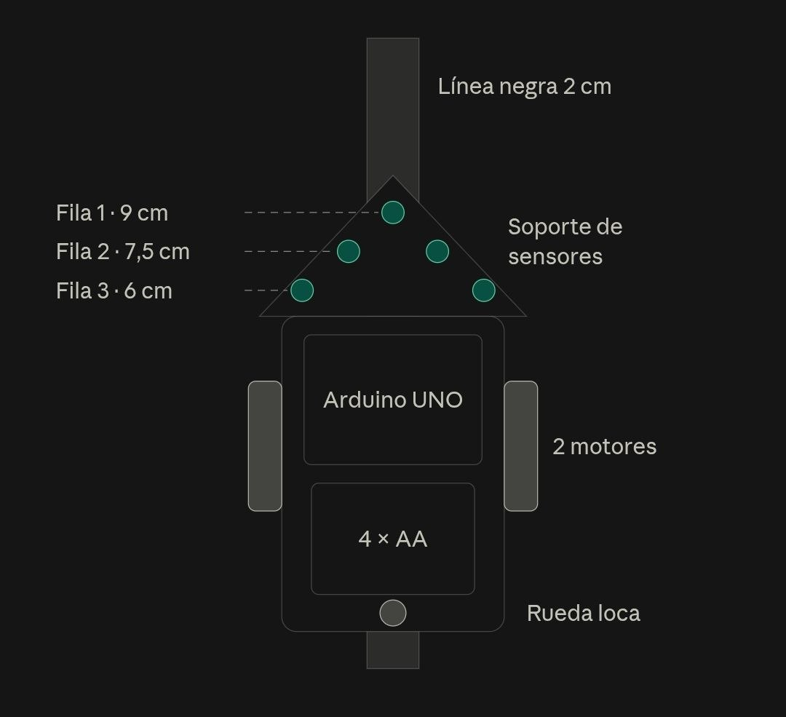
El diario de construcción
Todo el proceso quedó anotado: qué falló, qué se midió y qué cambió cada día. El driver que dormía, la protoboard que repartía mal la corriente, los dos programas de diagnóstico que salvaron la tarde, la rueda loca hecha con la bola de un desodorante y las ligas que la mañana del concurso resolvieron el derrape y la altura de los sensores de una vez.
Son dieciocho entradas, del primer tornillo al día después del concurso: leer el diario completo.
Así lo armamos

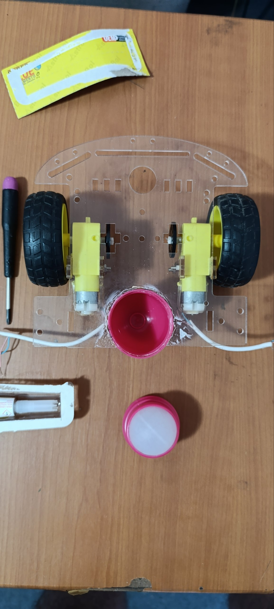

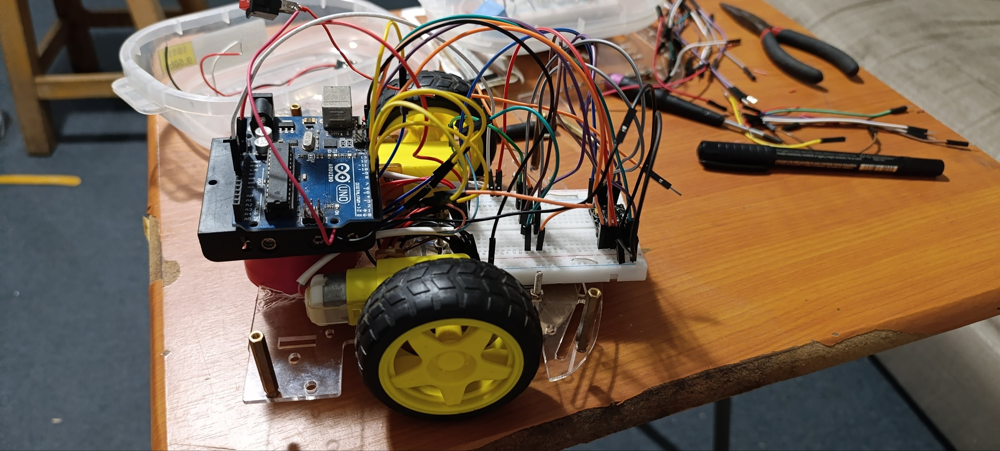

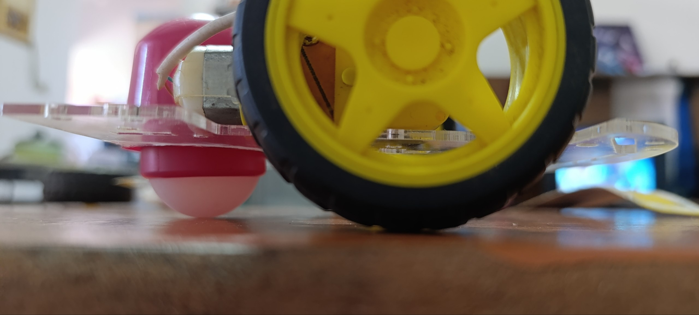

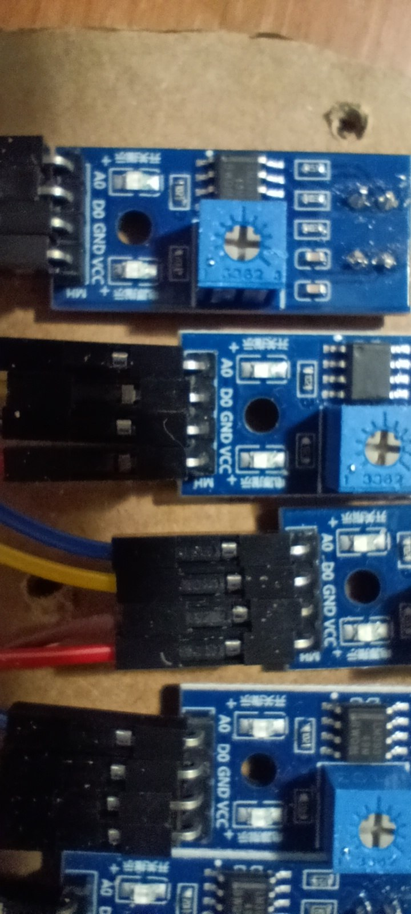

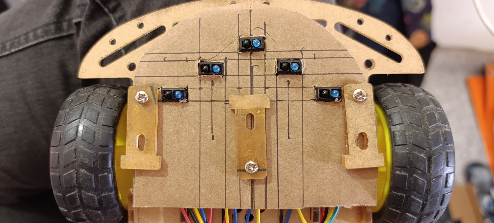

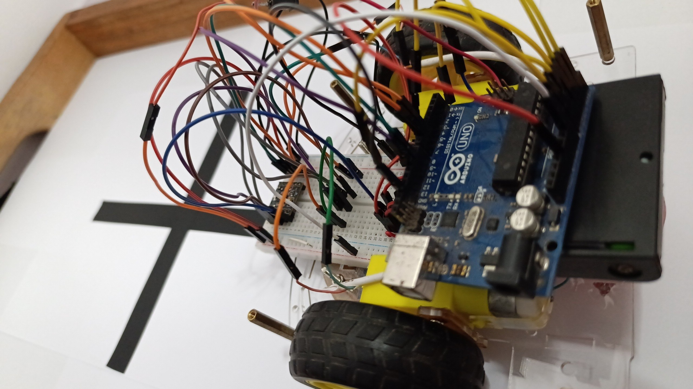

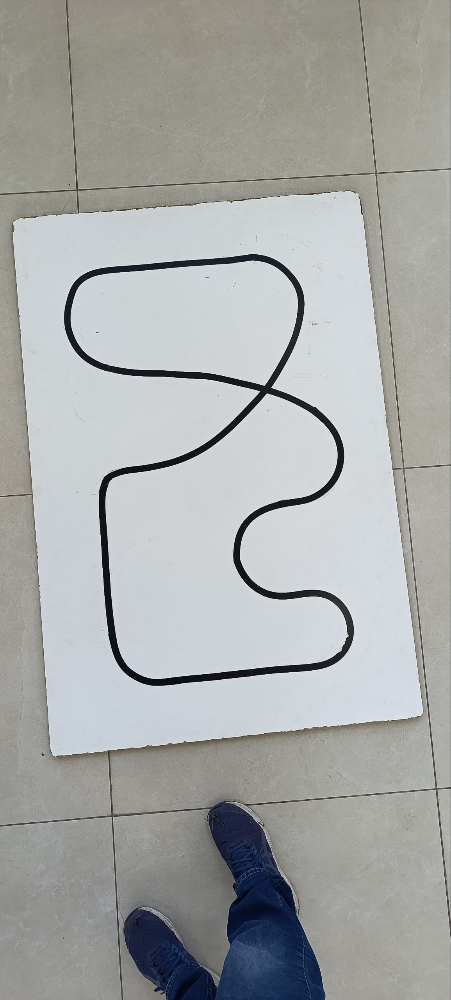